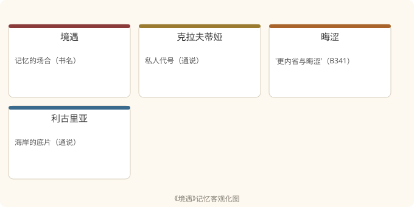

境遇
一、基本信息
| 作者 | 埃乌杰尼奥·蒙塔莱 |
|---|---|
| 成书/出版 | 1939年（Britannica B341：Le occasioni (1939)——中译名待核） Eugenio Montale — Encyclopaedia Britannica（百科全书） |
| 国别/地区 | 意大利 |
| 时代 | 近代 · 20世纪30年代末 |
| 体裁 | 诗集 |
| 语言 | 意大利语 |

《境遇》记忆客观化图（主题·结构图）
二、创作背景
Britannica（B341）：Le occasioni (1939)——蒙塔莱代表作序列（B341：'progressively more introverted and obscure'）。
Britannica（B341）：蒙塔莱——1975诺奖；隐逸派。
题材（通说待核）：《达莉亚》等——'克拉夫蒂娅'（Clizia）与'沃尔夫'意象。
三、内容脉络
（通说待核）'境遇'：记忆中的'克拉夫蒂娅'与利古里亚。
（通说待核）'蛇'与'鹰'的动物意象（通说待核）。
四、主要人物表
| 人物 | 身份 | 说明 |
|---|---|---|
| 抒情'我' | 隐逸诗人 | （B341 语系） |
五、主题与艺术特点
- '隐逸派'的深化（B341：more introverted and obscure）。
- '境遇'：个人记忆的客观化（书名语境——通说待核）。
- 反法西斯年代的诗（通说待核）。
六、影响与评论
- Britannica：Le occasioni (1939)（B341）。
Eugenio Montale — Encyclopaedia Britannica（百科全书） - Britannica：1975诺奖（B341 交叉）。
Eugenio Montale — Encyclopaedia Britannica（百科全书）
七、阅读建议
难点
- '克拉夫蒂娅'等私人代号。
- 隐逸派的晦涩升级。
- 《境遇》中译名（《 occasions》）待核。
- 意大利文原版。
蒙塔莱中期；后接《萨图拉》。
八、待核实
- '克拉夫蒂娅'原型（Irma Brandeis说）待核。
- 1939年出版（Einaudi说）待核。
- 篇目核对（B341未载）。